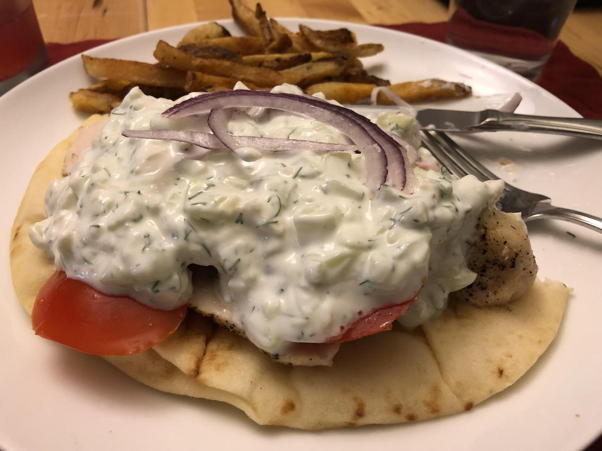

Personal rating: 1 / 5

1-2 chicken breast (should be lamb)
2 naan slices
1/2 onion
2 tomatoes
fries
lettuce
1 cup plain yogurt
1/2 cucumber peeled, seeded, and finely diced
1 Tbsp olive oil
1 Tbsp dill, chopped
1 Tbsp mint, chopped
1 Tbsp fresh lemon juice
1 garlic clove, minced
1/2 tsp salt
Bake the chicken with olive oil, salt, pepper, and garlic
Lay everything out on the Naan and cover in Tzatziki